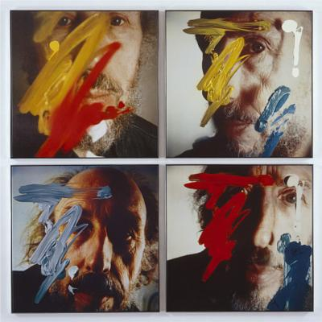
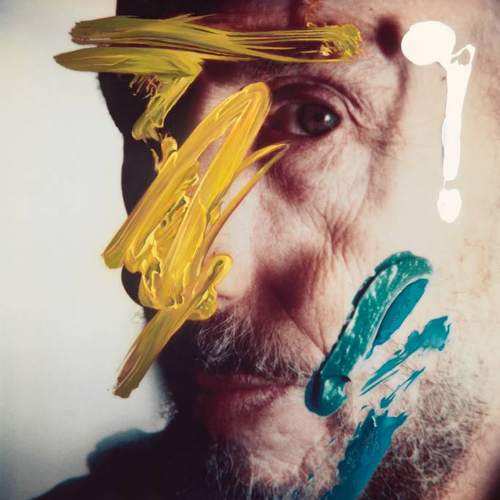
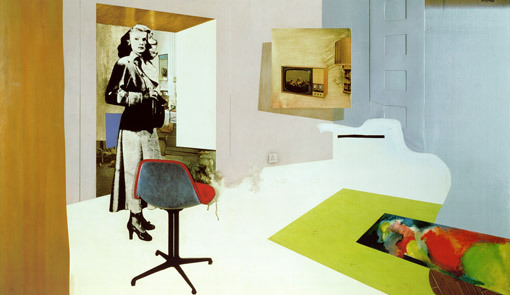
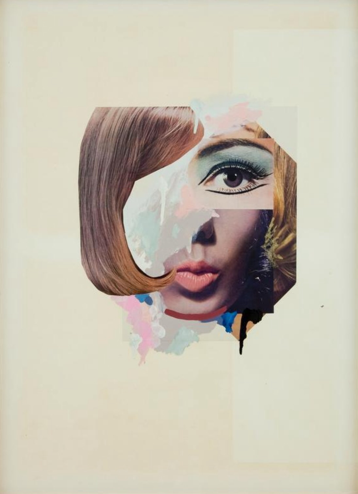

Pionero del Pop Art británico
Richard Hamilton (1922–2011) fue un influyente artista y teórico británico, conocido como uno de los padres del Pop Art. Estudió en la Royal Academy Schools y la Slade School of Fine Art. Su obra abarcó collages, pinturas, grabados y diseño gráfico, explorando la relación entre arte, tecnología y cultura de masas.



